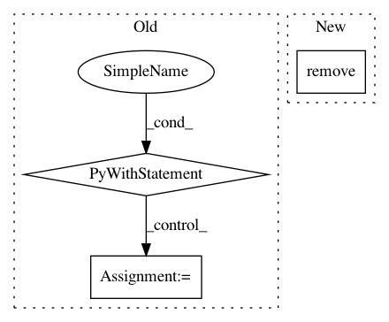

3d091b43f5c817709299d6cdfb95d4b72b356ca4,src/sagemaker/fw_utils.py,,tar_and_upload_dir,#Any#Any#Any#Any#Any#,100
Before Change
s3 = session.resource("s3")
key = "{}/{}".format(s3_key_prefix, "sourcedir.tar.gz")
with tempfile.TemporaryFile() as f:
with tarfile.open(mode="w:gz", fileobj=f) as t:
for sf in source_files:
// Add all files from the directory into the root of the directory structure of the tar
t.add(sf, arcname=os.path.basename(sf))
// Need to reset the file descriptor position after writing to prepare for read
f.seek(0)
s3.Object(bucket, key).put(Body=f)
return UploadedCode(s3_prefix="s3://{}/{}".format(bucket, key), script_name=script_name)
def framework_name_from_image(image_name):
After Change
tar_file = sagemaker.utils.create_tar_file(source_files)
s3.Object(bucket, key).upload_file(tar_file)
os.remove(tar_file)
return UploadedCode(s3_prefix="s3://{}/{}".format(bucket, key), script_name=script_name)
In pattern: SUPERPATTERN
Frequency: 3
Non-data size: 3
Instances
Project Name: aws/sagemaker-python-sdk
Commit Name: 3d091b43f5c817709299d6cdfb95d4b72b356ca4
Time: 2018-11-02
Author: nacho950@gmail.com
File Name: src/sagemaker/fw_utils.py
Class Name:
Method Name: tar_and_upload_dir
Project Name: tensorflow/datasets
Commit Name: 7744eb8203094be51b8708c74506be8a91554a02
Time: 2020-03-18
Author: thealmightylion.madhav@gmail.com
File Name: tensorflow_datasets/scripts/replace_fake_images.py
Class Name:
Method Name: rewrite_tar
Project Name: IDSIA/sacred
Commit Name: fce6ae4fafe9b1e5a2b7f3287813ca76e4c92d33
Time: 2015-06-23
Author: qwlouse@gmail.com
File Name: tests/test_config/test_config_files.py
Class Name:
Method Name: test_load_config_file